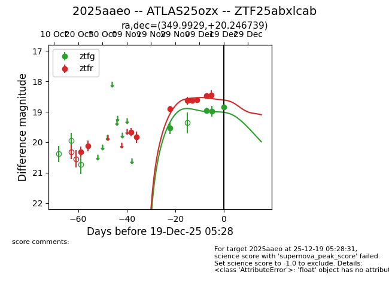
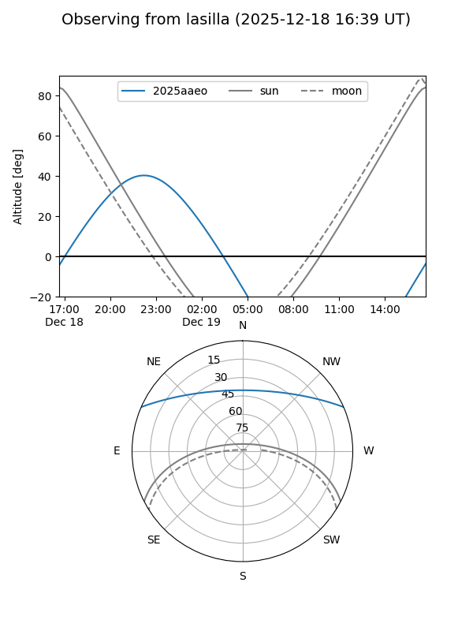
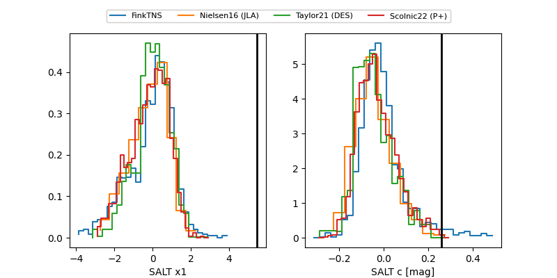

2025aaeo
Target 2025aaeo at 2025-12-19 05:29
Aliases and brokers:
FINK: fink-portal.org/ZTF25abxlcab
Lasair: lasair-ztf.lsst.ac.uk/objects/ZTF25abxlcab
ALeRCE: alerce.online/object/ZTF25abxlcab
TNS: wis-tns.org/object/2025aaeo
YSE: ziggy.ucolick.org/yse/transient_detail/2025aaeo
alt names
ZTF25abxlcab (ztf,fink_ztf)
2025aaeo (tns,yse)
ATLAS25ozx (atlas)
Coordinates:
equatorial (ra, dec) = 349.9929,+20.24674
equatorial (HMS+DMS) = 23:19:58.30,+20:14:48.26
galactic (l, b) = (95.4934,-37.70361)
Flags:
Photometry:
last ztfg=18.83, ztfr=18.44
4 ztfg, 10 ztfr detections
Lightcurve

Visibility


Additional plots
